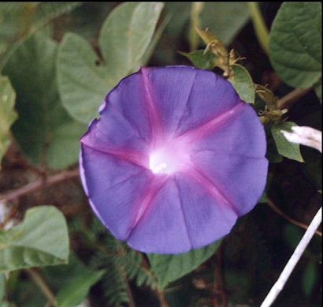

Плагин Auto Fx (часть 2)
Фильтры группы Focal Effects
Фильтр Focal Mask (Фокусная маска)
Вызовем окно плагина: Effects > Auto FX Software > Mystical 2 (Эффекты > Auto FX Software > Mystical 2). Откроется окно плагина. В окне плагина выберем эффект Focal Mask (Фокусная маска): Select Effect > Mystical Focus > Focal Mask (Выбрать эффект > Мистический фокус > Фокусная маска).
Окно этого фильтра отличается от рассмотренного в предыдущем уроке фильтра Focal Brush (Фокусная кисть), хотя общие элементы управления такие же (рис. 1).
У этого фильтра нет выбора режимов Global (Глобальный) и Brush On (Кисть).
Давайте в этом уроке немного поменяем стиль изложения материала и изучим этот фильтр и его элементы управления в ходе выполнения упражнения.
Сначала давайте обратим внимание на само название фильтра. Стоит предположить, что его лучше использовать при наличии маски в изображении. Также не стоит забывать, что зачастую с помощью плагина выполняется лишь часть работы, либо эффект применяется к части изображения. Так что переложить всю работу с Photo-Paint на плечи плагина не всегда возможно и целесообразно.
Учитывая выше сказанное, приступим. На рис. 2 показано исходное изображение. На рис. 2 оно очень уменьшено, поэтому качество немного пострадало. Исходное изображение имеет размеры 1024 х 1536 px при разрешении 72 dpi.
Наша задача затенить и придать размытость изображению примерно ниже плеч. Давайте сделаем предварительные действия, т. к. действия фильтра могут негативно отразиться при его применении ко всему изображению. Но чтобы удобнее было работать, продублируйте изображение (хотя это и не обязательно). Оригинал (или дубликат) будет служить на этапе подготовки, визуальным ориентиром. Дополнительно стоит установить направляющую, выше которой изображение должно быть изменено незначительно (рис. 3).
Теперь выделим все изображение, нажав Ctrl + A. Перейдем в режим Paint On Mask (Рисовать по маске), нажав сочетание клавиш Ctrl + K. Изображение станет полностью белым. Напомню, что защищенная область изображается черным цветом, а изменяемая область – белым цветом. Согласно нашему плану, нам необходимо защитить верхнюю часть изображения. Также не следует забывать, что частично защищенные пиксели также входят в редактируемую область и изображаются оттенками серого.
Воспользуемся этими свойствами и используем инструмент Interactive Fill (Интерактивная заливка), нажав клавишу G. Установим цвет краски черным и зальем изображение, как на рис. 4.
Обратите внимание, что начальный цвет заливки – черный, а конечный белый. Также была добавлена точки по середине заливки, имеющая 80 – 90 % серого. Это было сделано для того, чтобы темная (защищенная) часть занимала большую половину изображения, а также для более плавного перехода от защищенной части изображения к редактируемой
Закончив с заливкой, выйдите из режима Paint On Mask (Рисовать по маске), нажав сочетание клавиш Ctrl + K. Визуально пока ничего не изменилось, хотя вы можете увидеть изменения в докере Channels (Каналы).
Теперь запустим плагин и выберем фильтр Focal Mask (Фокусная маска). Назначение некоторых ползунков нам известно из предыдущего урока. Поэтому изменим значение параметра Focus Strength (Степень фокусировки), установив его равным 50. Параметр Focus Strength (Степень фокусировки) отвечает за силу (степень) проявления эффекта. Чем больше значение, тем сильнее проявляется эффект. Как вы заметили, этот фильтр работает аналогично фильтру Focal Brush (Фокусная кисть), размывая изображение. Однако есть и отличия, которые видны даже по имеющимся элементам управления.
Значение параметра Opacity (Непрозрачность) по умолчанию равно 100 и мы его менять не будем.
Затемним немного изображение с помощью параметра Dark Tint (Темный оттенок). Этот параметр позволяет затемнять оттенки, практически не меняя цвет в изображении. Увеличим его значение до 40.
Также немного улучшим изображение с помощью ползунка Darken Shading (Затенение оттенка), который добавляет глубину цветов в тенях и темных областях изображения. По умолчание его значение равно 0. Мы же увеличим его до 10.
На этом этапе наше изображение в окне плагина будет выглядеть, как на рис. 5.
Еще раз напомню, что изображения на скриншотах сильно уменьшены и уменьшено разрешение.
Что мы имеем на данный момент… Мы сделали мягкое размытие и затенение нижней части изображения, максимально предохранив от изменения голову, а также сделав плавный переход от размытой части к более резкой. Это получилось благодаря нашей предварительной подготовке изображения в Photo-Paint.
Однако мне не нравится результат на лице (оно слегка размылось) и цветок хотелось бы сделать четче. Для этого воспользуемся инструментом Brush Off Focal Areas (Кисть исключающая фокусируемую область). Но использование этого инструмента требует некоторой практики. Дело в том, что плагин наглым образом сбрасывает всякий раз настройки кисти, поэтому если вы воспользовались, например, командой Undo (Отменить), то настройки кисти сбросятся до значений по умолчанию, либо к предыдущим настройкам. Так что параметры кисти нужно всякий перепроверять в окне Brush Palette (Палитра кистей).
Еще одна особенность фильтра Focal Mask (Фокусная маска) – его «курсор», точнее форма кисти. Она напоминает снайперский прицел (рис. 6).
Назначение двойного кончика кисти в том, что между внутренней и внешней окружностью находится зона перехода. Другими словами происходит что-то вроди «перетекания» эффекта, от более сильной степени проявления внутри малой окружности и постепенно ослабевая в зоне между внутренним и внешним кругом. По умолчанию размер кисти равен 450, что является гигантским. Уменьшим его до 300 и обработаем лицо и часть цветка инструментом Brush Off Focal Areas (Кисть исключающая фокусируемую область).
Оставив в окне значения Brush Palette (Палитра кистей) значения параметров Opacity (Непрозрачность) и Feather (Размытие) без изменения, т. е. равными 40 и 55 соответственно, аккуратно обработаем кистью требуемые области, меняя лишь ее размер, с помощью ползунка Size (Размер).
Закончив обработку, нажмем кнопку ОК в верхней части окна плагина.
На рисунке 7 показаны исходное фото (справа) и результат.
Добиться таких же результатов используя один лишь Photo-Paint гораздо сложнее. Однако с плагином, этого можно достичь буквально за пару минут работы.
Теперь продолжим изучение остальных элементов управления в фильтре Focal Brush (Фокусная кисть).
В верхней части фильтра находится кнопка Select Focal Mask (Выбрать фокусную маску). Ее нажатие приводит к появлению диалогового окна Effect Masks (Маски эффектов) (рис. 8).
В этом диалоговом окне находятся заготовки масок, которые вы можете использовать в своей работе. По умолчанию это диалоговое окно открывается на вкладке Thumbnails (Миниатюры), где представлены миниатюры образцов масок. Вкладка History (История) содержит образцы недавно использованных масок. Вкладка Favorites (Избранное) содержит набор масок, которыми вы пользуетесь чаще всего. Естественно, нужно сначала добавить туда маску, нажав в нижней части окна кнопку Add to Favorites (Добавить в Избранное). После выбора нужного образца маски, для ее применения, щелкните кнопку Apply to Image (Применить к изображению). Чтобы удалить маску из изображения (если она вам больше не нужна или вы позже передумали ее использовать), нажмите кнопку Clear From Image (Удалить из изображения).
Выпадающее меню Focal Type (Тип фокуса), аналогично рассмотренному в уроке 1 (рис. 9). Поэтому повторно здесь я его рассматривать не буду.
У нас остались не рассмотренными еще парочка элементов управления. Сейчас мы их изучим в ходе рассмотрения примера. На рис. 10 показано исходное изображение.

1. Запустим плагин и выберем фильтр Focal Mask (Фокусная маска).
2. Щелкнем на кнопке Select Focal Mask (Выбрать фокусную маску). В диалоговом окне Effect Masks (Маски эффектов) выберем заготовку FM004.AFX (рис. 11). Нажмите кнопку Apply to Image (Применить к изображению).
3. В окне фильтра сделаем настройки, как на рис. 12.
На рис. 13 показано текущее состояние изображения.
Как и следовало ожидать, изображение размылось, но сам цветок (т. е. центральная часть изображения) практически остался без изменения, т. к. он оказался под маской.
У нас остался еще вне поля зрения ползунок Brighten Casts (Осветление оттенков). Этот параметр позволяет увеличить яркость в светах и усилить оттенки в изображении. Но прежде, чем мы сделаем эксперимент с этим ползунком, давайте вернем резкость правой части цветка, которая также оказалась размытой.
4. Выберите инструмент Brush Off Focal Areas (Кисть исключающая фокусируемую область) и обработаем правую часть цветка, чтобы отменить в этой области действие фильтра (рис. 14).
Чтобы увидеть действие параметра Brighten Casts (Осветление оттенков), я увеличил его значение с 10 (это значение мы установили на шаге 3), до 50. На рис. 15 показан результат. Справа – значение Brighten Casts = 50.
Теперь вы можете дальше самостоятельно освоить другие варианты работы фильтра, выбирая различные типы в меню Focal Type (Тип фокуса). Принцип работы останется такой же.
Т. к. остальные фильтры этой группы действуют аналогично, то рассматривать полностью их не имеет смысла. Мы поступим немного иначе. Мы рассмотрим еще пару фильтров этой группы, не с целью ознакомления с принципом их действия, а с целью рассмотрения тех элементов управления, которые нам не встретились в первых двух фильтрах этой группы. А заодно рассмотрим элементы окна плагина, которые являются общими для плагина в целом.
Фильтр Focal Plane (Фокусная плоскость)
В этом фильтре, помимо знакомых уже нам элементов управления, появляется еще один. Окно фильтра показано на рис. 16.
Этот элемент управления имеет то же название, что и сам фильтр – Focal Plane (Фокусная плоскость). На рисунке он активен и отображается в цвете. Этот элемент управления также встречается в некоторых фильтрах.
Сам фильтр размывает изображение в определенном направлении, которое задает Путь фокусной плоскости. Этот инструмент позволяет менять угол, начальную и конечную точку пути. На рис. 17 показано изображение в окне плагина и путь, который выглядит в виде прямой линии.
В зависимости от выполняемых действий, вид указателя мыши меняет свою форму. По умолчанию, плагин сам формирует путь. Его можно изменить. В этом случае, при наведении указателя мыши на концы пути, он принимает вид двунаправленной стрелки, что позволяет растянуть путь или изменить угол наклона. При наведении на линию пути, указатель принимает вид четырехнаправленной стрелки, при этом можно переместить линию пути.
Если отвести указатель мыши в сторону, в пределах изображения, то он примет вид маленького треугольника с плюсиком внизу. В этой ситуации, вы можете создать свой собственный путь, добавив таким образом еще один. Т. е. одновременно может быть несколько путей. Если у вас несколько путей, то можно удалить любой из них. Для этого просто нужно щелкнуть на нем и нажать клавишу Delete. Однако не может быть меньше одного пути, т. е. удалить их все нельзя.
Фильтр Focal Zoom (Фокусный масштаб)
Этот фильтр также имеет специфичные элементы управления, присущие некоторым видам фильтров. Окно фильтра Focal Zoom (Фокусный масштаб) показано на рис. 18.
Кроме рассмотренных нами в других фильтрах элементов управления, здесь присутствует два новых элемента управления (рис. 19).
Нижний элемент управления – Create Focus Ellipse (Создать фокусный эллипс). Он создает эллипсы, с помощью которых настраивается зона проявления эффекта. С помощью этого элемента управления можно создать несколько эллипсов в изображении.
На рис. 20 показан созданный эллипс.
Как видите, он может быть не только эллиптической, но и круглой формы. С эллипсом мы уже встречались в фильтре Focal Mask (Фокусная маска). Здесь принцип действия эллипса тот же. Это градиентный переход эффекта, от максимума внутри малой окружности, к постепенному затуханию эффекта между внутренней и наружной окружностями.
Итак, инструмент Create Focus Ellipse (Создать фокусный эллипс) ничего не делает, кроме создания таких эллипсов. Единственная дополнительная возможность этого инструмента, так это возможность задания точки в изображении, в которой будет создан эллипс. Если щелкнуть при активном инструменте внутри изображения и при этом не отпускать левую кнопку мыши, то можно отбуксировать эллипс в нужное место. Если вы случайно отпустили кнопку мыши, то повторный щелчок на изображении добавит еще один эллипс.
Для работы с созданным эллипсом (эллипсами) предназначен инструмент Transform Focus Ellipse (Преобразование фокусного эллипса) (рис. 19, верхний инструмент). С помощью этого инструмента можно не только трансформировать, но и удалять лишние эллипсы. В зависимости от точки на эллипсе, на которую вы наведете указатель мыши, его форма меняется. Форма указателя мыши недвусмысленно указывает, какую операцию можно выполнить. Можно изменять форму, размер, угол наклона и перемещать эллипсы в различные места изображения.
На этом закончим рассмотрение группы эффектов Focal Effects (Фокусные эффекты).
Теперь рассмотрим оставшиеся элементы управления плагина.
Диалоговое окно Layer Palette (Палитра слоев)
Диалоговое окно Layer Palette (Палитра слоев) (рис. 21) присутствует в окне плагина, независимо от того, с каким фильтром вы работаете.
Дело в том, что плагин размещает результат применения каждого фильтра на отдельный слой. Например, вы используете разные фильтры из разных групп или категорий, для получения нужного эффекта. В этой ситуации, все применяемые фильтры (точнее результаты их действия) помещаются на отдельные слои, что видно в окне Layer Palette (Палитра слоев) (рис. 22).
Несмотря на неказистость окна, оно позволяет выполнять достаточно много различных действий со слоями. Рассмотрим основные возможности Layer Palette (Палитры слоев).
Как показано на рис. 22, было применено три различных фильтра, что сразу же нашло отражение в Layer Palette (Палитре слоев). Очередность расположения слоев зависит от порядка применения фильтров. Самый первый примененный фильтр (на рисунке 22, это фильтр Focal Brush) располагается внизу списка, следующий примененный фильтр выше и т. д. В самом низу списка расположено само изображение, которое является фоном и обозначается в Layer Palette (Палитре слоев), как Background (Фон). Слева, рядом с названием каждого слоя появляется значок в виде зеленой галочки. Эта галочка означает, что слой активен. Можно отключить слой, щелкнув на ней напротив соответствующего фильтра (рис. 23).
После щелчка на зеленой галочке, она меняется на красный знак перечеркивания, что означает, что данный слой не активен. В этом случае, плагин перерисовывает изображение и дает вам возможность увидеть, как будет выглядеть изображение без данного слоя.
Если окажется, что данный фильтр оказал нежелательный эффект или просто уже не нужен, его можно удалить, выделив его в окне Layer Palette (Палитра слоев) и нажав кнопку Delete Layer (Удалить слой) в нижней части окна. Удаление происходит без дополнительного запроса на подтверждение удаления, так что вернуть назад случайно удаленный слой можно только с помощью команды Undo (Отменить), нажав Ctrl + Z.
С помощью окна Layer Palette (Палитра слоев) можно менять порядок слоев, т. е. переместить слой выше или ниже другого слоя (слоев). Для этого необходимо выделить его в списке слоев окна Layer Palette (Палитра слоев) и перетащить его мышью.
Также в этом окне можно управлять прозрачностью каждого слоя с помощью ползунка Opacity (Непрозрачность).
Кроме этого, при выделении слоя в окне Layer Palette (Палитра слоев), автоматически вызывается окно соответствующего фильтра, давая возможность сразу же приступить к изменению необходимых параметров.
Как видите, несмотря на миниатюрность и неказистость этого окна, оно довольно многофункционально. И это еще не всё.
Внизу окна расположена кнопка Mask Layer (Слой-маска). Тут совсем все просто. Плагин создает слой-маску, который оказывает влияние на эффект вышележащих слоев. Не скажу, что это очень гибкий инструмент. Альтернативой может служить инструмент Brush Off, который отменяет действие фильтра. Также, создание маски лучше возложить на Photo-Paint, который более продвинутый в этом отношении. Можно создать слой-маску «закрывающий» все изображение, либо в появившемся фильтре Masking Layer (Маскировочный слой) (рис. 24), выполнить настройки слоя-маски.
По умолчанию, активным инструментом в этом фильтре является инструмент Лассо. В окне этого фильтра можно настроить цвет создаваемой маски, а также сглаживание краев. Можно создать маску используя кисти. А непосредственно в окне Layer Palette (Палитра слоев), можно настроить прозрачность слоя-маски. Слой-маску можно переместить на уровень вверх или вниз и выполнять те же манипуляции, что и с другими слоями.
В верхней части окна Layer Palette (Палитра слоев) находится выпадающее меню, доступ к которому дает маленькая кнопочка в верхнем правом углу, в виде треугольника (рис. 25).
Это меню позволяет сохранить слой в виде заготовки, команда Save Layer Preset (Сохранить заготовку слоя), загрузить заготовку – Load Layer Preset (Загрузить заготовку слоя) или добавить заготовку с помощью команды Append Presets (Добавить заготовки). Разница между командами Load Layer Preset (Загрузить заготовку слоя) и Append Presets (Добавить заготовки) заключается в том, что при выполнении первой из них, загружается заготовка и все слои с эффектами заменяются загруженной заготовкой. А при выполнении команды Append Presets (Добавить заготовки), заготовка добавляется, как новый слой. Команда Clone Selected (Клонировать выделенное) создает клон или дубликат выделенного слоя.
Еще одна, неплохая возможность диалогового окна Layer Palette (Палитра слоев) – это возможность просмотреть отдельно вид изображения на конкретном слое. Другими словами, когда у вас несколько слоев, вы видите результат их наложения. Может возникнуть ситуация, когда вы хотите посмотреть, как выглядит изображение на нижележащих слоях, как будто вышележащих слоев нет. Нет необходимости отключать видимость вышележащих слоев или удалять их. Достаточно навести мышь на нужный слой и через пару секунд появится миниатюра изображения, соответствующая данному слою (рис. 26).
Еще одна возможность предоставляемая Layer Palette (Палитра слоев) – переименование слоя. Для изменения имени, дважды щелкните на названии слоя. Появится маленькое диалоговое окно Layer Name (Имя слоя) (рис. 27).
В поле вверху введите имя. Но к сожалению имя можно ввести только английскими буквами.
Прочие команды плагина Mystical 2.
Можно считать, что мы рассмотрели уже все общие возможности плагина. Но вам обязательно пригодится комплект заготовок, входящих в состав пакета. Их количество и разнообразие поражает воображение и может удовлетворить почти любого пользователя. Тут остается только выразить благодарность разработчикам. Доступ к этому богатству находится в верхней части окна плагина (рис. 28).
")
Чтобы загрузить заготовку, достаточно щелкнуть на кнопке Select Layer Preset (Выбрать заготовку слоя).
В открывшемся окне Presets (Заготовки) (рис. 29), можно выбрать нужную заготовку.
В левой части окна, в списке Presets (Заготовки), можно выбрать нужную категорию заготовок и затем в левой части окна выбрать конкретную заготовку. Если навести указатель мыши на образец заготовки, то она меняется на оригинал, что позволяет увидеть изображение До и После применения заготовки эффекта. Если вы передумали, нажмите кнопку Cancel (Отмена) внизу окна. Если хотите применить заготовку, щелкните на ней мышью и потом на кнопке ОК.
Предупреждение!!! Не нажимайте кнопку Disable Selected (Отключить выбранное). После нажатия этой кнопки, выделенная заготовка исчезнет из списка заготовок и как вернуть ее обратно к жизни, не имею не малейшего понятия, т. к. волшебной кнопки возврата к значениям по умолчанию нет.
- Кнопка Save Layer Preset (Сохранить заготовку слоя) позволяет сохранить свои собственные наработки в виде файла. Затем сохраненная заготовка появится в списке заготовок окна Presets (Заготовки).
- Кнопка Original (Оригинал) ¬– позволяет временно переключить изображение в окне плагина на исходный вариант. Это удобно, потому что в ходе длительной работы над изображением, часто необходимо сравнить результаты с оригиналом. Плагин позволяет взглянуть на оригинал без отмены действий или закрытия плагина.
- Кнопка ОК – применяет внесенные изменения к изображению, закрывает окно плагина и вы возвращаетесь обратно в Photo-Paint, в котором появляется уже измененное плагином изображение.
- Кнопка Cancel (Отмена) – отменяет все изменения. При этом закрывается окно плагина и вы возвращаетесь в Photo-Paint. Изображение остается без изменений.
И пожалуй последнее обще замечание в этом уроке. Заготовки можно загрузить непосредственно из окна большинства фильтров. В этом случае, окно Presets (Заготовки) откроется сразу на соответствующей категории заготовок.
Краткие итоги
В этих двух уроках мы рассмотрели элементы управления плагина, общие для всех фильтров и группу фильтров Focal Effects. Что можно сразу же сказать по этому поводу. В Photo-Paint имеется достаточный арсенал средств для получения схожих результатов, однако в плагине для каждого эффекта, лучше сказать, на каждый чих, имеется целая куча дополнительных инструментов и настроек. Что позволяет получить требуемый результат с большой точностью и минимумом усилий. Так что, как и положено по закону жанра – плагины на то они и плагины, чтобы облегчить труд и расширить возможности хост-приложения.
В следующих уроках мы продолжим наши изыскания в области использования плагина Mystical 2.
")